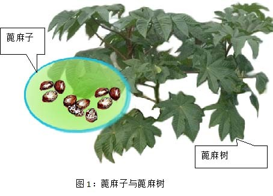
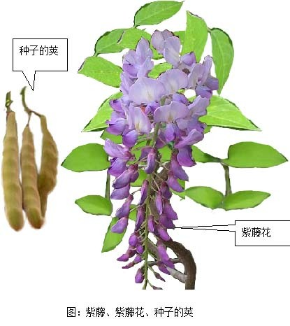
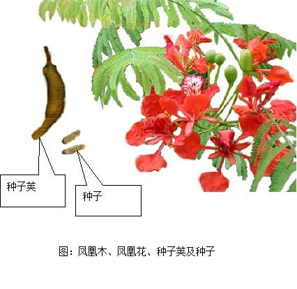
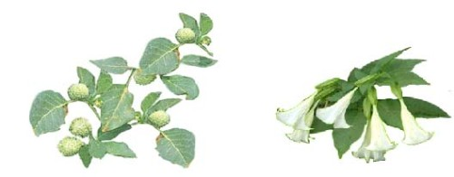
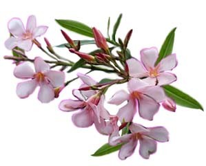
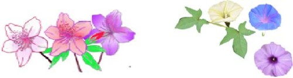
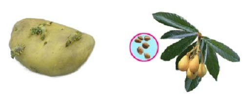
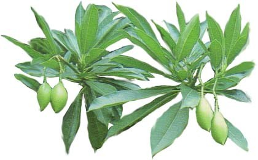

小心有毒的植物简体
在美国加州，一个男孩在一棵蓖麻油树上摘下两颗豆子，吞服之后，不久就死了。
一个少女在紫藤上摘下一只种子莱，吃了几颗种子，结果病得很重，呕吐、下痢、腹部肿大。在亚州，一个小女孩吃了牵牛花，事后生了病。
这些惊人的意外，都是植物中毒的标准例子。它们都是一件不大为人知道的事实证据:很多普通植物，含有毒素如果吃了，会发生严重病痛甚至致命的结果，就全世界论，有毒的植物何足千百种。这些植物并不是全部会致命的，并且，在普通的住宅附近，大部份都不会被发现。不过，在这些有毒的植物之中，却包含了一些最引人注目和最可爱的藤子、灌木和花卉。
由于植物中毒的事情比较少，甚至植物专家都可能怀疑这些普通的植物是不是全部有毒的。
兹列举常见有毒的植物如次:
一、蓖麻油树:
这是一种生长得很快的大叶植物，看来颇为悦目，它的种子蓖麻子（Castor Bean）是做蓖麻油（Castor Oil）的原料，蓖麻油在去毒后一般用作滋润、保湿之油脂，但原始的蓖麻子含有一种危险的毒素。
蓖麻子曾经在儿童中引起死亡的案由，它很可口，但只吃 两颗，就足以使人呜呼哀哉。（图1是蓖麻子与蓖麻树）

二、紫藤:
紫藤（Wisteria）是一种普通装饰用的藤子，花朵呈美丽紫色，但它的种子和种子的荚，如果吃了，都是危险的，会引起恶心、腹痛、腹胀并不停地呕吐和泻痢。世界各国，曾经报告很多紫藤中毒的例子。一个小孩只吃两颗紫藤豆，居然也生了大病。

三、凤凰木：
种子，种皮有斑纹。凤凰木的花和种子有毒，小孩误食种子后有头晕、流口水、腹胀、腹痛、下痢等症状。凤凰木（Flame Tree）台湾中南部种植很多，约十几公尺高，每年6、7月学校举办毕业典礼时，是它们盛开花朵的时候，花大红色，开花后结出一条条长形豆荚果，长可达60公分，成熟后呈深褐色，木质化，内藏40-50粒的小种子，种皮有斑纹。凤凰木的花和种子有毒，小孩误食种子后有头晕、流口水、腹胀、腹痛、下痢等症状。

四、蔓陀罗:
曼陀罗属包括大花（白花）曼陀罗、红花曼陀罗、紫花曼陀罗、毛曼陀罗、欧曼陀罗、无刺曼陀罗、重瓣曼陀罗等种类。台湾之曼陀罗种类的中毒以大花曼陀罗最常见。曼陀罗这一类的植物有都是有毒的，有些儿童吃了一些它们的种子，都不治而死。患敏感症的人，接触到任何种类的蔓陀罗，反肤都会发生反应，痛楚不堪。曼陀罗有麻醉作用。古人将此药取名为「蒙汗药」。20 世纪 70 年代，蔓陀罗为主的中药麻醉剂，这种麻醉方法已引起国外医学专家的重视。

五、夹竹桃:
夹竹桃是一种做饰品的植物，住宅庭院和道路边都可以看见，夹竹桃的每一部份都是危险的。它的花经蜜蜂采过做成的蜜，吃了令人致命。儿童咬过它的花、叶子或树枝的，都会死亡。用夹竹桃枝桠做燃料烹调的食物是有毒的。和夹竹桃的叶子、树皮、树液接触，都会引起严重的皮肤过敏症。有些地方，禁止燃烧夹竹桃的枝桠和叶资子，这些东西燃烧时的烟，是异常刺激的。

图：夹竹桃的每一部份都有毒。
六、鸡母珠:
鸡母珠（Rosarypea）落叶灌木，种子成精圆形，朱红色，顶端有黑点，又称想思子或相思豆，种子苦可作各种装饰，含剧毒，误食少量会恶心、呕吐、流冷汗、脉博加速，量多时可致死。鸡母珠在台湾中南部河岸、山麓及原野路旁皆可遇到。
七、有毒花类:
有时栽培或野生的花类也含有剧毒，譬如:台湾常见的牵牛花及杜鹃花类皆有毒，牵牛花全株有毒，种子毒性最强，服用过量造成呕吐腹痛、血便、甚至损及舌下神经，使舌头麻痹造成说话困难，杜鹃花类也是全株有毒，误食会产生嗯心、血压
下降、呼吸抑制、昏迷。

八、马铃薯的芽与枇杷的种子
国人常吃的马铃薯与枇杷，也要小心，因为马铃薯的芽与枇杷的种子都有毒，马铃薯是目前世界上除了谷物以外，用作人类主食的最重要的粮食作物，生长过程会产生茄碱，成熟采收的马铃薯块茎含有极微量的茄碱，一般对人体没有危害，但若马铃薯发芽，茄碱会大量累积，释放神经毒素。吃了可能出现呕吐、恶心、腹痛、腹泻等症状，严重者会导致昏迷、死亡。枇杷的种子和幼叶都有毒，孩童吃了20粒以上的种子会有头昏、恶心、呕吐、下痢、呼吸困难、肌肉痉挛等现象，甚至死亡。

图：马铃薯与芽 图：枇杷与种子
大多数植物中毒事件，都和儿童有关，他们时常到这些颜色鲜艳，气味芬芳的花卉和浆与种子的吸引。通常，植物中毒的事件不多，不过，由于诊断困难，每一件中毒案都是危险的。植物中毒的病情，可能和下述的病症相似：急性消化不良、盲肠炎、癞病、脑膜炎、脑炎、脑溢血和霍乱。中毒的征候可能包括头昏脑胀和疼痛等等。
如果你怀疑一个儿童或成人已经发生植物中毒的情况，您应该立即把他送医，并请教医生同时注意下列两点：
甲、如果你知道和什么植物有关，并且可以说出它的名字，要把它告诉医生。如果他也不知道特殊的治疗方法，他可以去向相关人士或机构请教。
乙、如果你不知道种植物的名字，亦可到附近的博物馆、植物学者或园艺所去叙述它。 甚至可以去请教中学或大学教植物的老师或朋友。
差不多所有的植物中毒都可以防止。你家附近有毒的植物，都要弄清楚．指出它们的危险性并叫你的孩子们远离它们，公园的花朵植物，不要去摘折它们，这些植物是观赏用，它们有些是含有毒性，譬如南港区有公园种有海柠檬果，其毒性之强，只要吃半个果仁即可致死，因此家长带孩子至公园游玩时，要告诉孩子不可随便摘折花木，如有认识之有毒花木，并告诉其危险性。

图：台湾许多公园都有种海柠檬果，其毒性之强，只要吃半个果仁即可致死。